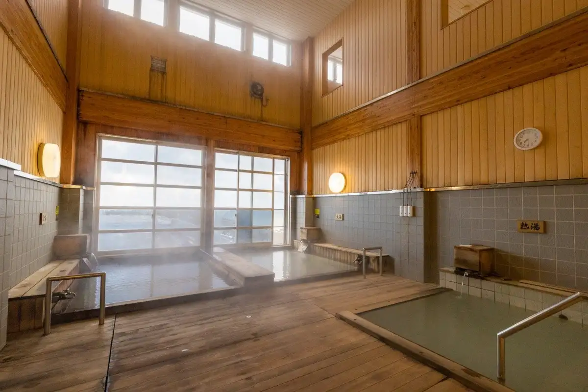
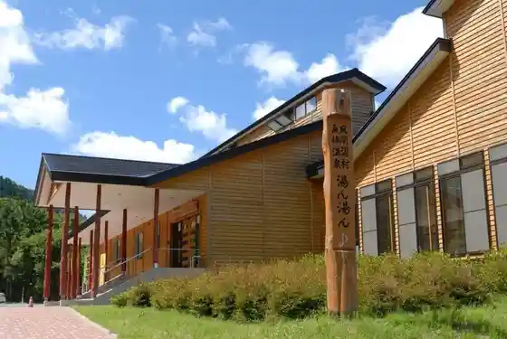
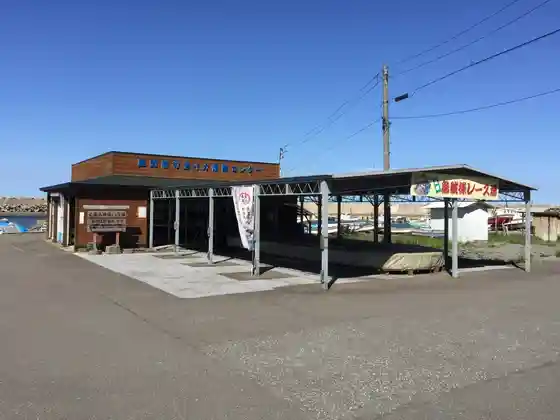
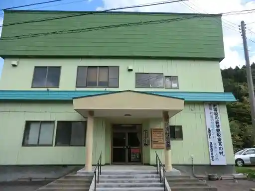

Kazamaura
Kazamaura · Aomori
Kazamaura
Highlighted on the Aomori map.

Sights
Kafu Ryon Senkyo
Kuwahata Onsen (Yu N Yu N ♪)

Aomori Hiba Senmonten (Waido no Ki)
Kazamaura Katsu Ika Bichiku Center

Kazamaura Tourism Association

Kaikyo Isaribi Park
Tsugarukaikyo " Raitofisshingu " Experience
Kazamaura Tourist Information